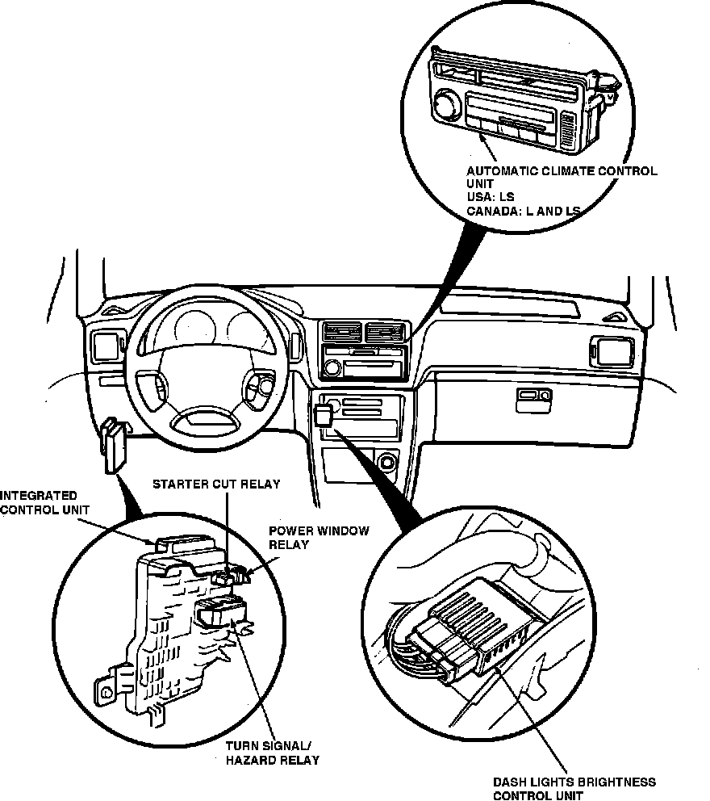

Operation CHARM
: Car repair manuals for everyone.
Home
>>
Acura
>>
1992
>>
Legend Sedan V6-3206cc 3.2L SOHC FI
>>
Repair and Diagnosis
>>
Starting and Charging
>>
Relays and Modules - Starting and Charging
>>
Starter Relay
>>
Locations
Starter Relay: Locations
I/P Relays & Control Units:

Starting System Components:
On Underdash Fuse Box